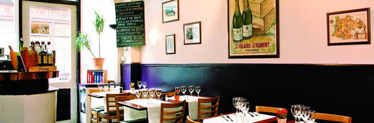

Looking for a bistrot restaurant for an enjoyable, friendly meal in the heart of Paris? Best Restaurants Paris will help you select the ideal spot from the city's leading establishments. Choose the district you would like and check out that bistrot restaurant you're looking for: the photos give you a prior feel of the atmosphere and extracts from the bistrot restaurant carte will help you finalize your choice. "Oeuf mayonnaise", "blanquette de veau", sole meunière, rice pudding... rediscover the pleasure of simple cooking in a bistrot restaurant.

Situated in the 4th district, in the Marais area, between Place de la Bastille and Place des Vosges, this small restaurant, with its light colours and handsome bar, possesses a true personality. Its bistrot cuisine, deceptively simple, is inspired by classic recipes, reinterpreted in a contemporary manner with finesse and lightness. Carefully chosen wines from vineyards all over France will complete your meal.